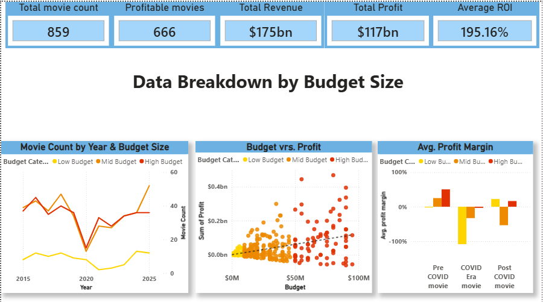
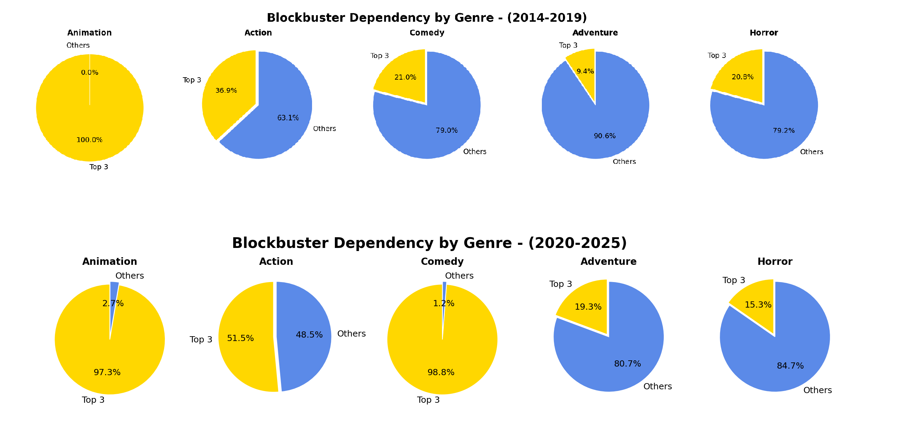

Aspiring Data Analyst with a background in journalism, focused on turning complex data into clear and accessible insights.
After 13 years as a journalist, I am transitioning into data analysis following professional training at John Bryce College in SQL, Python, Power BI, Excel, and AI-based analysis tools. Throughout my journalism career, I worked extensively with data across a wide range of topics, including formal reports, and developed strong research and analytical thinking skills.
Just as importantly, I learned how to take complex information and make it clear, relevant, and accessible to non-expert audiences. I am now applying those strengths to data analysis and building projects focused on extracting meaning from data and communicating it effectively.

A dashboard-based analysis of cinema industry trends from 2015 to 2025, with emphasis on the effects of the COVID-19 pandemic on movie releases, profitability, and industry performance.
Tools: Power BI

A Python-based analysis of cinema industry data exploring long-term trends in budgets, revenues, popularity, and profitability before, during, and after the pandemic.
Tools: Python, Pandas